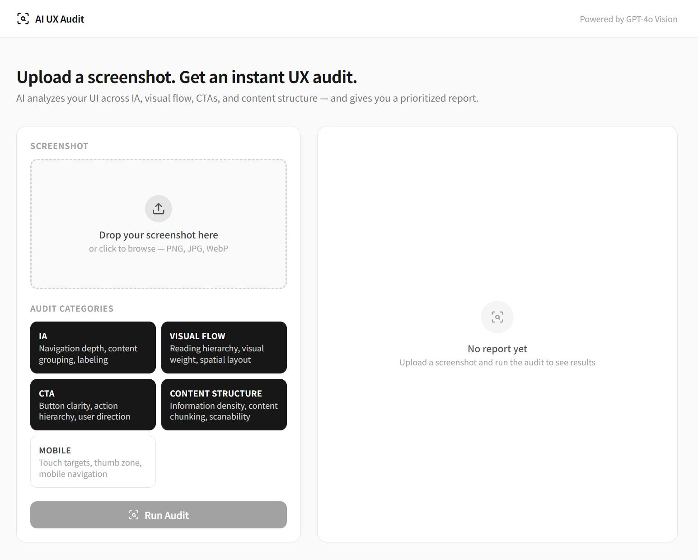
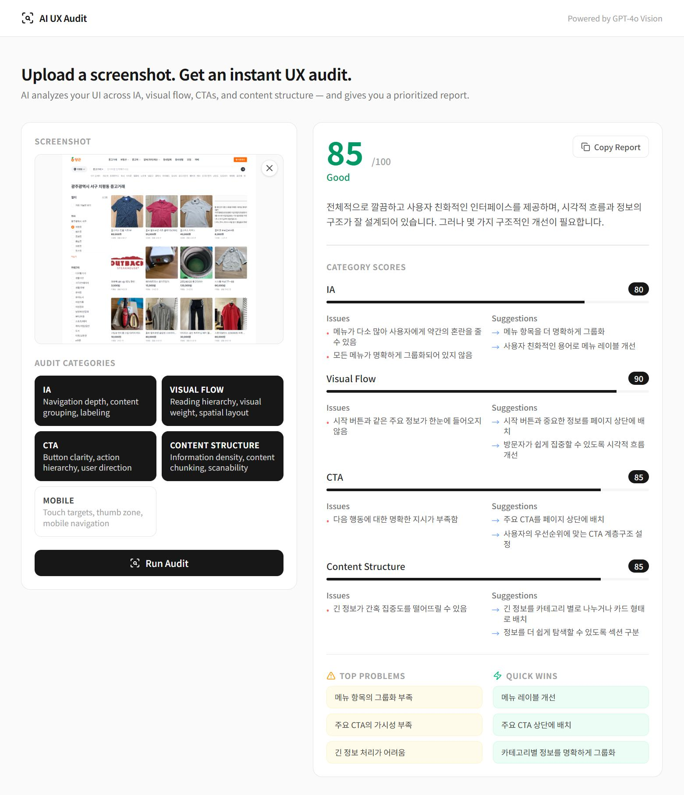
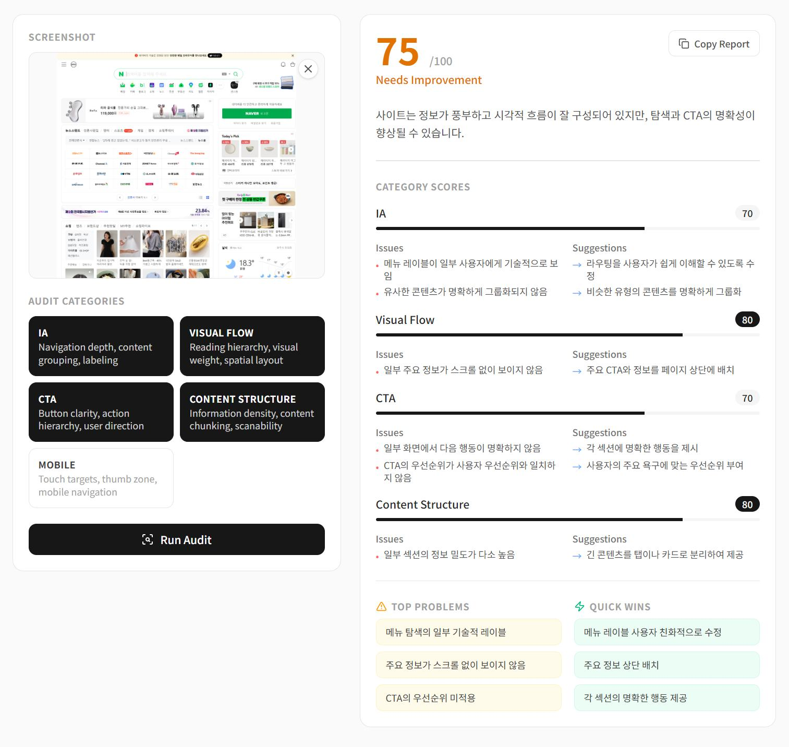
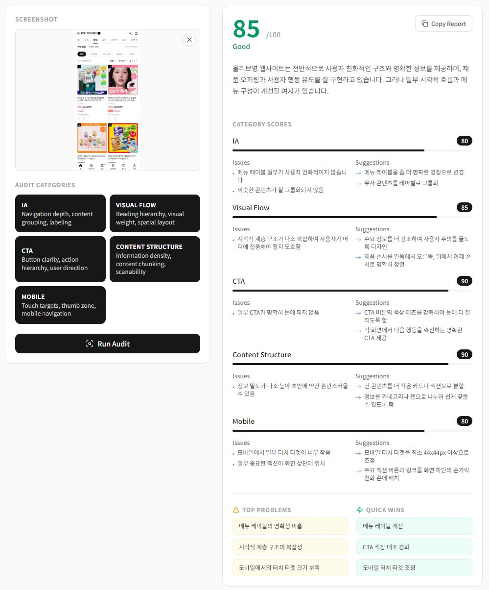
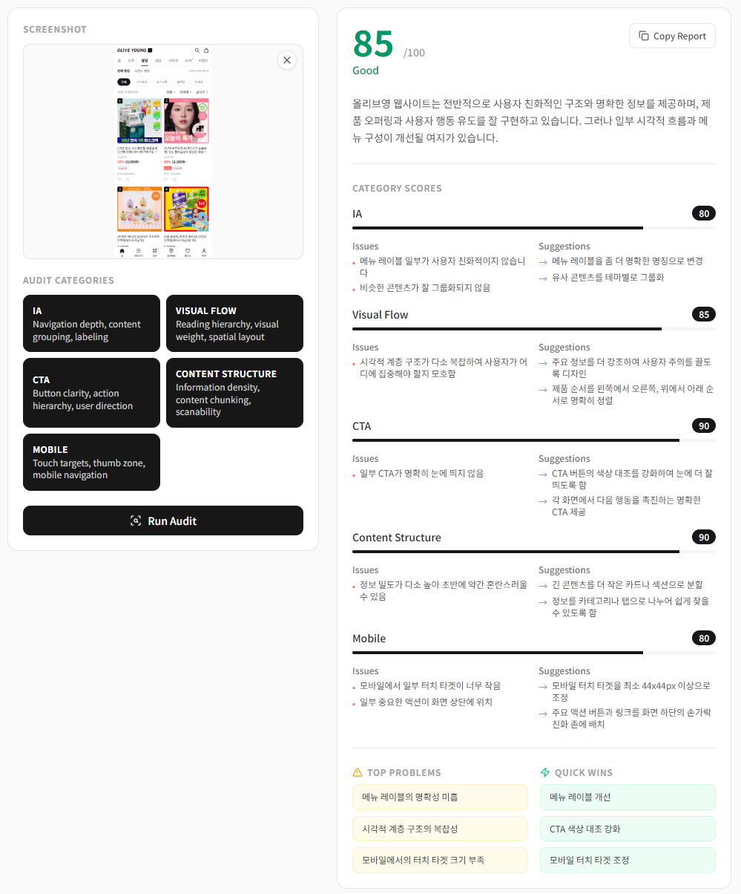
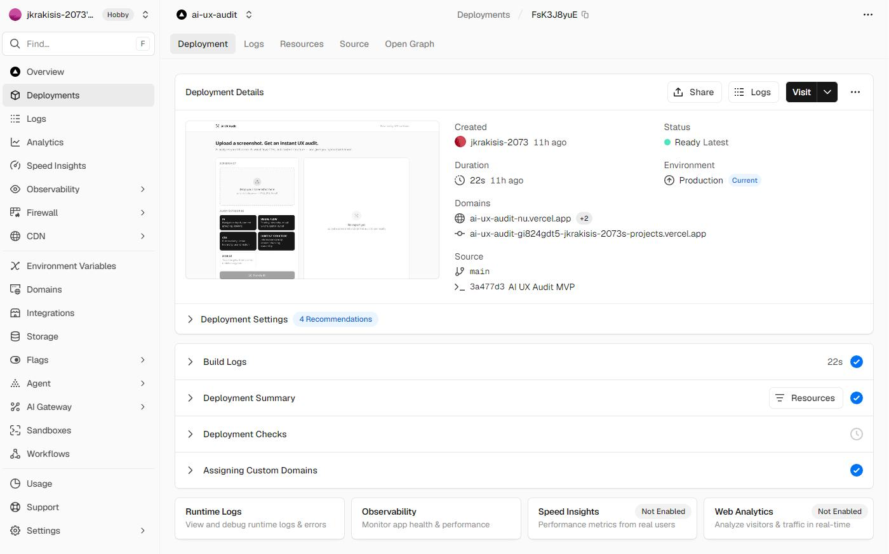
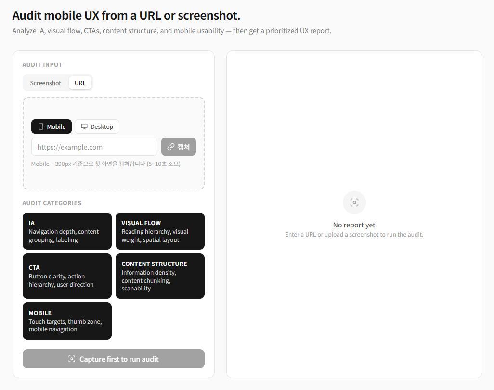
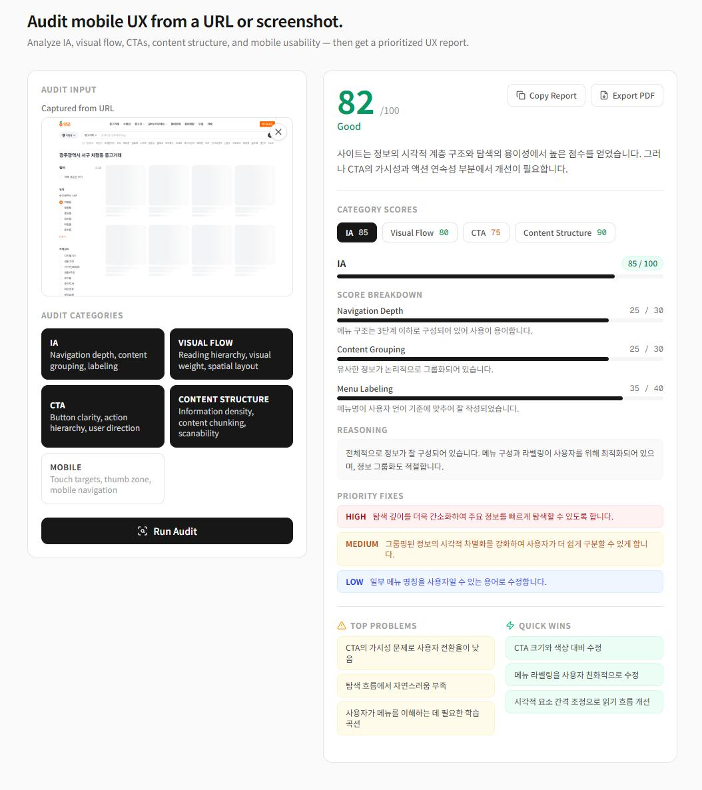
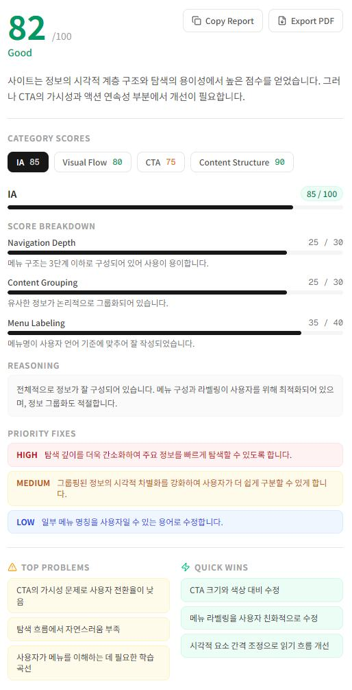

UX CASE STUDY · 2026
감각이 아닌 기준으로
UX를 진단하는 MVP
Designing structured criteria into every UX review.

02 / OVERVIEW
프로젝트 개요
03 / WHY ME
“이 기준,
어디서 나온 거예요?”
리뷰어마다 다른 기준
품질이 리뷰어 경험에 무너진다
다음 리뷰에 재현이 안 된다
문서화되지 않는 판단
30분 이상 소비되는 분석
피드백 작성에 대부분 소진된다
그 질문에 답하기 위해 AI UX Audit를 만들었습니다. 24년의 경험이 기준이 된 도구.
04 / PROBLEM
디자인 리뷰의 기준은
왜 사람마다 다를까?
동일한 화면이라도 리뷰어의 경험과 관점에 따라 지적하는 지점이 달라졌습니다.
정보구조를 지적하는 사람
UI 비주얼을 지적하는 사람
CTA 위치를 지적하는 사람
그 결과 → 리뷰 품질 불일치
Business Impact
- UX 리뷰 품질이 리뷰어마다 달라짐 — 반복 검토 시 결과 재현이 어려움
- 개선 우선순위 모호 — 객관적 판단 어려움
- 사이트별 비교 평가가 불가능함 — 분석에 평균 30분 이상 소요
05 / GOAL
UX 리뷰를
구조화할 수 있을까?
AI를 활용해 아래 5개 관점에서 UX를 진단하고, 개선 우선순위를 제안하는 MVP를 제작하고자 했습니다.
06 / HYPOTHESIS
UX 평가 기준을 구조화하고 AI 분석을 결합하면,
사용자는 UX 문제를 더 빠르고 일관되게 다룰 수 있을 것이다.
UX 문제를 빠르게 발견한다
개선 우선순위를 명확히 이해한다
리뷰 품질을 일정 수준 유지한다
07 / RESEARCH
기존 UX 휴리스틱 평가와 실제 프로젝트 경험을 기반으로 선정
UX 진단 기준 5개 영역
IA Information Architecture
- 메뉴 깊이
- 정보 그룹화
- 메뉴 명확성
Visual Flow 시선 흐름
- 시선 흐름
- 정보 우선순위
- 화면 계층 구조
CTA Call to Action
- 행동 유도 명확성
- 전환 흐름
- CTA 우선순위
Content 콘텐츠 구조
- 정보 밀도
- 콘텐츠 분절
- 가독성
Mobile 모바일 대응
- 터치 영역
- 반응형 레이아웃
- 모바일 가독성
08 / SOLUTION · FLOW
화면 업로드부터 개선 제안까지
AI UX Audit는 5단계의 단순한 흐름으로 작동합니다.
Hypothesis — UX 평가 기준을 구조화하면 리뷰 일관성을 높이고 분석 시간을 단축할 수 있다.
5개 영역(IA, Visual Flow, CTA, Content, Mobile)으로 평가 체계를 정의하면 동일 기준으로 UX를 진단할 수 있다.
09 / SOLUTION · CORE
핵심 기능 4가지
화면 업로드
분석할 화면을 업로드합니다
UX 진단
AI가 UX 기준에 따라 분석을 수행합니다
영역별 점수
IA · Visual Flow · CTA · Content · Mobile 점수 제공
개선 리포트
문제점 · 개선 제안 · 우선순위 자동 생성
10 / UX SCORE
올리브영 모바일 진단으로 보는
영역별 UX 점수
개선 우선순위는 점수가 낮은 영역부터 자동 정렬됩니다.
* 올리브영 모바일 화면 진단 결과 · Powered by GPT-4o Vision
11 / CASE STUDIES
실제 서비스 3곳 진단 결과
동일한 5개 기준으로 실제 화면을 진단한 결과입니다

당근 Karrot · 중고거래
IA 80 · VF 90 · CTA 85 · Content 85 · Mobile –
주요 개선 — 메뉴 그룹화 · 주요 CTA 가시성 향상

네이버 Naver · 포털
IA 70 · VF 80 · CTA 70 · Content 80 · Mobile –
주요 개선 — 기술적 메뉴 레이블 · 스크롤 없는 핵심 정보 노출

올리브영 Olive Young · 커머스
IA 80 · VF 85 · CTA 90 · Content 90 · Mobile 80
주요 개선 — 시각 계층 단순화 · 모바일 터치 타겟 확대
12 / CASE · DETAIL
실제 Audit 결과 상세 분석 — 올리브영 진단

발견 문제
- 장바구니 CTA가 스크롤 중간에 묻혀 있어 처음 방문 시 바로 인식이 안 됨
- 카테고리 계층이 4단계 이상으로 중첩되어 원하는 제품군 탐색에 평균 3클릭 이상 필요
- 상품 상세 페이지에서 핵심 정보(성분표, 후기)가 스크롤 하단에 묻혀 CTA와 분산
AI 분석 결과
CTA와 IA 개선 시 전체 점수가 크게 상승 가능한 영역. 모바일 터치 타겟 및 IA 개선 시 전체 점수 상승 가능성 확인.
디자이너 해석
상품이 많을수록 카테고리 탐색 복잡도가 높아져 구매 동기가 연결되지 않는 문제. 피부 타입별 콘텐츠가 다르나 첫 화면에서 어떤 제품을 써야 하는지 안내하지 않아 이탈 유발.
개선 방향
- 홈 화면 상단에 피부 타입 진단 카드 배치해 진입 경로 생성
- 장바구니 CTA를 상단 고정바로 이동해 스크롤 없이도 항상 노출
- 카테고리 로직을 2단계로 단순화시켜 탐색 시 클릭 횟수 축소
13 / DESIGN DECISION
v1에서는 왜 Screenshot 분석을 먼저 선택했는가
URL 분석
- 크롤링 이슈
- 렌더링 오류
- 구현 복잡도
Screenshot 기반 UX Audit
- 5일 MVP 범위 내 검증 가능
- 핵심 가설 검증에 집중
14 / RESULT
MVP 배포 완료
- AI UX Audit 서비스 구현
- UX 평가 기준 체계화
- AI 기반 UX 리포트 자동 생성

15 / RESULT
Validation Result
| 항목 | 기존 | 개선 |
|---|---|---|
| UX 리뷰 | 수동 | AI 자동화 |
| 분석 시간 | 기존 수동 UX 리뷰 평균 약 30분 | AI UX Audit 평균 약 2분 (내부 테스트 기준) |
| 평가 기준 | 개인 경험 | 5개 기준 |
| 결과 형식 | 비정형 | 구조화 리포트 |
Impact
- UX 분석 시간 93% 단축
- 평가 기준 표준화 — 반복 검토 가능
- 서비스 간 비교 분석 가능
16 / DATA VALIDATION
Validation & Measurement
MVP 단계에서는 사용자가 Audit을 실행하고, 결과 리포트까지 도달하는지 확인하기 위해 PostHog 기반 퍼널 이벤트를 설정했습니다.
핵심 인사이트
초기 내부 검증에서는 핵심 퍼널이 정상 작동함을 확인했습니다. 다음 단계에서는 30일 단위로 표본을 확장하고, report_copied 전환율을 기준으로 리포트 활용성을 검증할 계획입니다.
17 / LEARNINGS
무엇을 배웠는가
AI보다 중요한 것은 UX 판단 기준의 구조화였다.
좋은 UX 리뷰는 문제 발견보다 우선순위 정의에 가까웠다.
MVP에서는 기능 확장보다 핵심 문제 검증이 중요했다.
19 / NEXT STEP
Roadmap 2.0
- 사용자 계정 시스템
- 결과 저장 기능
- PDF Export
- PostHog Analytics
- UX Score Benchmark
- 경쟁 서비스 비교
- AI 개선안 추천
- 반복 측정 리포트
20 / UPDATE · OVERVIEW
Product Evolution v2.0

URL 자동 캡처
URL만 입력하면 Playwright가 화면을 직접 캡처합니다.
설명 가능한 점수
세부 항목별 점수와 근거, 우선순위까지 제공합니다.
결과 그대로 출력
화면에 보이는 리포트를 섹션별로 깨짐 없이 PDF로 저장합니다.
데이터 기반 검증
PostHog로 전환 퍼널을 추적해 가설을 검증합니다.
PostHog 로그 데이터 연동을 통해 전체 유저 퍼널의 이탈 지점을 모니터링하고, 가설 검증을 통해 MVP 배포 후 유저 리텐션 및 리포트 공유(Copy/Export) 전환율을 극대화하는 UX 전략 수립.
21 / UPDATE · URL CAPTURE
URL 한 줄로 캡처부터 진단까지

URL 입력
분석할 화면의 URL만 입력합니다.
자동 캡처
Mobile(390×844) · Desktop(1440×1024) 중 선택해 서버에서 직접 캡처합니다.
Mobile 카테고리 자동 매핑
Mobile로 캡처하면 진단 카테고리에 자동으로 추가됩니다.
업로드 없이 진단
캡처 즉시 Run Audit으로 연결됩니다.
22 / UPDATE · SCORE ENGINE
왜 이 점수인지 설명한다

세부 항목 점수
영역별 점수를 세부 항목으로 분해해 근거를 제공합니다.
종합 진단 근거
항목별 점수를 바탕으로 종합적인 진단 근거를 서술합니다.
3단계 우선순위
HIGH · MEDIUM · LOW로 개선 우선순위를 제시합니다.
모바일 전용 채점
터치 영역 · 반응형 · 가독성 기준으로 모바일을 채점합니다.
23 / UPDATE · EXPORT & ANALYTICS
결과를 남기고, 데이터로 검증한다
화면 그대로 출력
섹션별로 한 페이지씩, 깨짐 없이 PDF로 저장합니다.
텍스트로 공유
리포트 전체를 텍스트로 즉시 복사합니다.
이벤트 추적
캡처 · 분석 시작 · 완료 · 리포트 활용까지 추적합니다.
전환 퍼널 분석
단계별 이탈 지점을 데이터로 확인합니다.
AI UX AUDIT · CLOSING